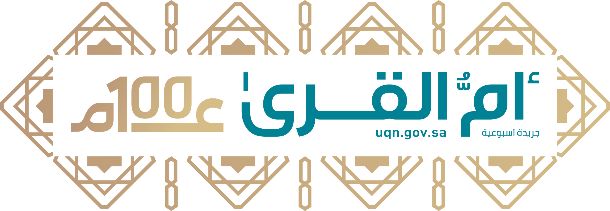

صفحة المحامي
منصة الخدمات الإلكترونية للمحامين
ناجز
معين
ديوان المظالم
المركز الوطني للوثائق والمحفوظات
المدونات القضائية
وزارة العدل
البوابة القضائية العلمية
الهيئة السعودية للمحامين

جريدة أم القرى